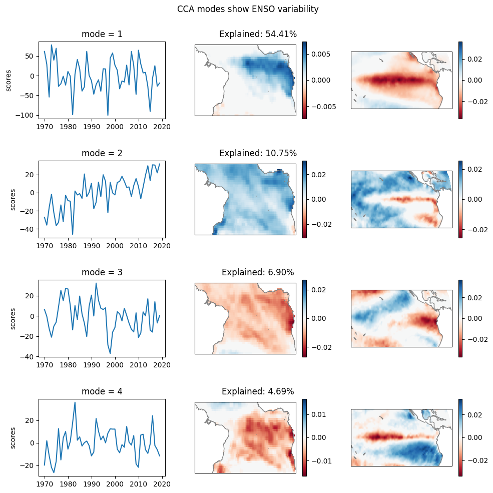
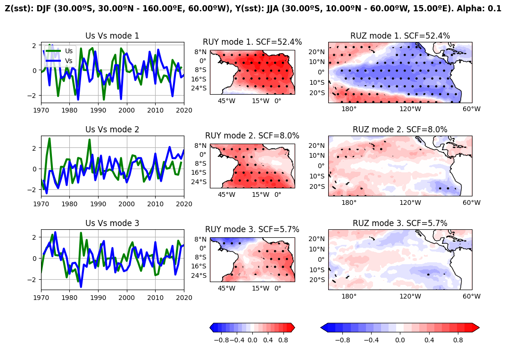

Calculating Extended EOF coupled patterns on SST data using Spy4Cast and Xeofs¶
We will be estudying ENSO variability and following the example of Sparse PCA on Xeofs docs¶
We will be using the package Xeofs so it has be installed on your environment
[1]:
!pip install xeofs
Requirement already satisfied: xeofs in /Users/pabloduran/opt/anaconda3/envs/Spy4CastManual/lib/python3.10/site-packages (3.0.4)
Requirement already satisfied: numpy>=1.24 in /Users/pabloduran/opt/anaconda3/envs/Spy4CastManual/lib/python3.10/site-packages (from xeofs) (1.24.0)
Requirement already satisfied: pandas>=2 in /Users/pabloduran/opt/anaconda3/envs/Spy4CastManual/lib/python3.10/site-packages (from xeofs) (2.2.3)
Requirement already satisfied: xarray>=2024.10.0 in /Users/pabloduran/opt/anaconda3/envs/Spy4CastManual/lib/python3.10/site-packages (from xeofs) (2024.10.0)
Requirement already satisfied: scikit-learn>=1.0.2 in /Users/pabloduran/opt/anaconda3/envs/Spy4CastManual/lib/python3.10/site-packages (from xeofs) (1.6.1)
Requirement already satisfied: tqdm>=4.64.0 in /Users/pabloduran/opt/anaconda3/envs/Spy4CastManual/lib/python3.10/site-packages (from xeofs) (4.67.1)
Requirement already satisfied: dask>=2023.0.1 in /Users/pabloduran/opt/anaconda3/envs/Spy4CastManual/lib/python3.10/site-packages (from xeofs) (2025.3.0)
Requirement already satisfied: typing-extensions>=4.8.0 in /Users/pabloduran/opt/anaconda3/envs/Spy4CastManual/lib/python3.10/site-packages (from xeofs) (4.12.2)
Requirement already satisfied: click>=8.1 in /Users/pabloduran/opt/anaconda3/envs/Spy4CastManual/lib/python3.10/site-packages (from dask>=2023.0.1->xeofs) (8.1.8)
Requirement already satisfied: cloudpickle>=3.0.0 in /Users/pabloduran/opt/anaconda3/envs/Spy4CastManual/lib/python3.10/site-packages (from dask>=2023.0.1->xeofs) (3.1.1)
Requirement already satisfied: fsspec>=2021.09.0 in /Users/pabloduran/opt/anaconda3/envs/Spy4CastManual/lib/python3.10/site-packages (from dask>=2023.0.1->xeofs) (2025.3.0)
Requirement already satisfied: packaging>=20.0 in /Users/pabloduran/opt/anaconda3/envs/Spy4CastManual/lib/python3.10/site-packages (from dask>=2023.0.1->xeofs) (24.2)
Requirement already satisfied: partd>=1.4.0 in /Users/pabloduran/opt/anaconda3/envs/Spy4CastManual/lib/python3.10/site-packages (from dask>=2023.0.1->xeofs) (1.4.2)
Requirement already satisfied: pyyaml>=5.3.1 in /Users/pabloduran/opt/anaconda3/envs/Spy4CastManual/lib/python3.10/site-packages (from dask>=2023.0.1->xeofs) (6.0.2)
Requirement already satisfied: toolz>=0.10.0 in /Users/pabloduran/opt/anaconda3/envs/Spy4CastManual/lib/python3.10/site-packages (from dask>=2023.0.1->xeofs) (1.0.0)
Requirement already satisfied: importlib_metadata>=4.13.0 in /Users/pabloduran/opt/anaconda3/envs/Spy4CastManual/lib/python3.10/site-packages (from dask>=2023.0.1->xeofs) (8.6.1)
Requirement already satisfied: python-dateutil>=2.8.2 in /Users/pabloduran/opt/anaconda3/envs/Spy4CastManual/lib/python3.10/site-packages (from pandas>=2->xeofs) (2.8.2)
Requirement already satisfied: pytz>=2020.1 in /Users/pabloduran/opt/anaconda3/envs/Spy4CastManual/lib/python3.10/site-packages (from pandas>=2->xeofs) (2025.1)
Requirement already satisfied: tzdata>=2022.7 in /Users/pabloduran/opt/anaconda3/envs/Spy4CastManual/lib/python3.10/site-packages (from pandas>=2->xeofs) (2025.2)
Requirement already satisfied: scipy>=1.6.0 in /Users/pabloduran/opt/anaconda3/envs/Spy4CastManual/lib/python3.10/site-packages (from scikit-learn>=1.0.2->xeofs) (1.8.0)
Requirement already satisfied: joblib>=1.2.0 in /Users/pabloduran/opt/anaconda3/envs/Spy4CastManual/lib/python3.10/site-packages (from scikit-learn>=1.0.2->xeofs) (1.4.2)
Requirement already satisfied: threadpoolctl>=3.1.0 in /Users/pabloduran/opt/anaconda3/envs/Spy4CastManual/lib/python3.10/site-packages (from scikit-learn>=1.0.2->xeofs) (3.6.0)
Requirement already satisfied: zipp>=3.20 in /Users/pabloduran/opt/anaconda3/envs/Spy4CastManual/lib/python3.10/site-packages (from importlib_metadata>=4.13.0->dask>=2023.0.1->xeofs) (3.21.0)
Requirement already satisfied: locket in /Users/pabloduran/opt/anaconda3/envs/Spy4CastManual/lib/python3.10/site-packages (from partd>=1.4.0->dask>=2023.0.1->xeofs) (1.0.0)
Requirement already satisfied: six>=1.5 in /Users/pabloduran/opt/anaconda3/envs/Spy4CastManual/lib/python3.10/site-packages (from python-dateutil>=2.8.2->pandas>=2->xeofs) (1.16.0)
⚠️ Xeofs requires python version >= 3.10
Data ingestion and preprocessing¶
[2]:
from spy4cast import Dataset, Region, Month
from spy4cast.spy4cast import Preprocess
import numpy as np
import xarray as xr
import cartopy.crs as ccrs
from matplotlib.gridspec import GridSpec
import matplotlib.pyplot as plt
import os
[3]:
# We will use sea surface temperature both for dataset and predictor, but
# with differnt regions
predictor = Preprocess(Dataset("HadISST_sst_chopped.nc", "./datasets").open("sst").slice(
Region(lat0=-30, latf=10,
lon0=-60, lonf=15,
month0=Month.JUN, monthf=Month.AUG,
year0=1970, yearf=2019),
))
predictand = Preprocess(Dataset("HadISST_sst_chopped.nc", "./datasets").open("sst").slice(
Region(lat0=-30, latf=30,
lon0=-200, lonf=-60,
month0=Month.DEC, monthf=Month.FEB,
# year0, yearf refer to monthf -> will span from DEC 1970 to FEB 2020
year0=1971, yearf=2020),
))
[INFO] Preprocessing data for variable sst took: 0.074 seconds
[INFO] Preprocessing data for variable sst took: 0.373 seconds
We have to matrices, one \(Y \rightarrow (n_y \times n_t)\) and one \(Z \rightarrow (n_z \times n_t)\).
By concatenating the along the \(0\) axis we have one \(X \rightarrow ((n_y + n_z) \times n_t)\)
[4]:
y = predictor.data
y.shape
[4]:
(3000, 50)
[5]:
z = predictand.data
z.shape
[5]:
(8400, 50)
[6]:
x = np.concatenate([y, z])
# Check that the first ny rows are Y and the next nz rows are Z
ny, nz = y.shape[0], z.shape[0]
assert (np.isclose(x[:ny, :], y) | np.isnan(y)).all()
assert (np.isclose(x[ny:, :], z) | np.isnan(z)).all()
x.shape
[6]:
(11400, 50)
[7]:
sst = xr.DataArray(
x, dims=("space", "time"), coords={"time": predictor.time.values}
)
sst
[7]:
<xarray.DataArray (space: 11400, time: 50)> Size: 2MB
array([[ 0.1218338 , -0.7404156 , -0.37068748, ..., 0.40730476,
-0.08609772, 0.7360344 ],
[ 0.12066078, -0.6983509 , -0.50611687, ..., 0.43603134,
-0.10463333, 0.71489143],
[ 0.09488487, -0.60853004, -0.47955322, ..., 0.4428997 ,
-0.08998299, 0.6097183 ],
...,
[-0.04133224, -0.6569271 , 0.27676392, ..., 0.3637085 ,
0.08168983, 0.23239326],
[ 0.08904076, -0.6933708 , 0.30057144, ..., 0.29126167,
0.05827522, 0.31897163],
[ 0.1316433 , -0.65839577, 0.30573654, ..., 0.24592209,
0.0136776 , 0.355505 ]], dtype=float32)
Coordinates:
* time (time) int64 400B 1970 1971 1972 1973 1974 ... 2016 2017 2018 2019
Dimensions without coordinates: space[8]:
import xeofs as xe
[9]:
model = xe.single.SparsePCA(n_modes=4, alpha=1e-5)
model.fit(sst, dim="time")
[9]:
<xeofs.single.sparse_pca.SparsePCA at 0x7fca904fba30>
[10]:
expvar = model.explained_variance()
expvar_ratio = model.explained_variance_ratio()
components = model.components()
scores = model.scores()
[11]:
print("Explained variance: ", expvar.round(0).values)
print("Relative: ", (expvar_ratio * 100).round(1).values)
Explained variance: [1790. 354. 227. 154.]
Relative: [54.4 10.8 6.9 4.7]
[16]:
kwargs = {"cmap": "RdBu", "vmin": None, "vmax": None, "transform": ccrs.PlateCarree()}
fig = plt.figure(figsize=(10, 10))
gs = GridSpec(4, 3, width_ratios=[1, 1, 1])
ax0 = [fig.add_subplot(gs[i, 0]) for i in range(4)]
ax1 = [fig.add_subplot(gs[i, 1], projection=ccrs.EqualEarth(central_longitude=0)) for i in range(4)]
ax2 = [fig.add_subplot(gs[i, 2], projection=ccrs.EqualEarth(central_longitude=180)) for i in range(4)]
for i, (a0, a1, a2) in enumerate(zip(ax0, ax1, ax2)):
x_i = components.sel(mode=i+1)
y_i = xr.DataArray(
x_i.isel(space=slice(0, ny)).values.reshape(predictor.lat.shape[0], predictor.lon.shape[0]),
dims=("lat", "lon"),
coords={"lat": predictor.lat.values, "lon": predictor.lon.values},
)
z_i = xr.DataArray(
x_i.isel(space=slice(ny, None)).values.reshape(predictand.lat.shape[0], predictand.lon.shape[0]),
dims=("lat", "lon"),
coords={
"lat": predictand.lat.values,
"lon": np.where(predictand.lon.values < 0, predictand.lon.values + 360, predictand.lon.values)
},
).sortby("lon")
scores.sel(mode=i + 1).plot(ax=a0)
#print(z_i.lon.min()+360, z_i.lon.max())
ax_title = fig.add_subplot(gs[i, :])
ax_title.axis('off')
ax_title.set_title(f'Explained: {expvar_ratio.values[i]*100:.02f}%')
a1.coastlines(color=".5")
y_i.plot(ax=a1, **kwargs)
a2.coastlines(color=".5")
z_i.plot(ax=a2, **kwargs)
a0.set_xlabel("")
fig.suptitle("Extended EOF modes show ENSO variability")
plt.tight_layout()
PLOTS_DIR = "plots-EEOF_using_XEOFS_and_Spy4Cast"
if not os.path.exists(PLOTS_DIR):
os.makedirs(PLOTS_DIR)
plt.savefig(os.path.join(PLOTS_DIR, "sparse_pca.png"))

[17]:
from spy4cast import spy4cast
[18]:
nm = 3
alpha = 0.1
mca = spy4cast.MCA(predictor, predictand, nm, alpha)
[INFO] Applying MCA
Shapes: Z(8400, 50)
Y(3000, 50)
Regions: Z DJF (30.00ºS, 30.00ºN - 160.00ºE, 60.00ºW)
Y JJA (30.00ºS, 10.00ºN - 60.00ºW, 15.00ºE)
Took: 4.644 seconds
[19]:
mca.plot(save_fig=True, name="mca.png", folder=PLOTS_DIR)
[INFO] Saving plot with path plots-EEOF_using_XEOFS_and_Spy4Cast/mca.png
[19]:
((<Figure size 1200x800 with 11 Axes>,),
(<AxesSubplot:title={'center':'Us Vs mode 1'}>,
<AxesSubplot:title={'center':'Us Vs mode 2'}>,
<AxesSubplot:title={'center':'Us Vs mode 3'}>,
<GeoAxesSubplot:title={'center':'RUY mode 1. SCF=52.4%'}>,
<GeoAxesSubplot:title={'center':'RUY mode 2. SCF=8.0%'}>,
<GeoAxesSubplot:title={'center':'RUY mode 3. SCF=5.7%'}>,
<GeoAxesSubplot:title={'center':'RUZ mode 1. SCF=52.4%'}>,
<GeoAxesSubplot:title={'center':'RUZ mode 2. SCF=8.0%'}>,
<GeoAxesSubplot:title={'center':'RUZ mode 3. SCF=5.7%'}>))

[ ]:
[ ]: